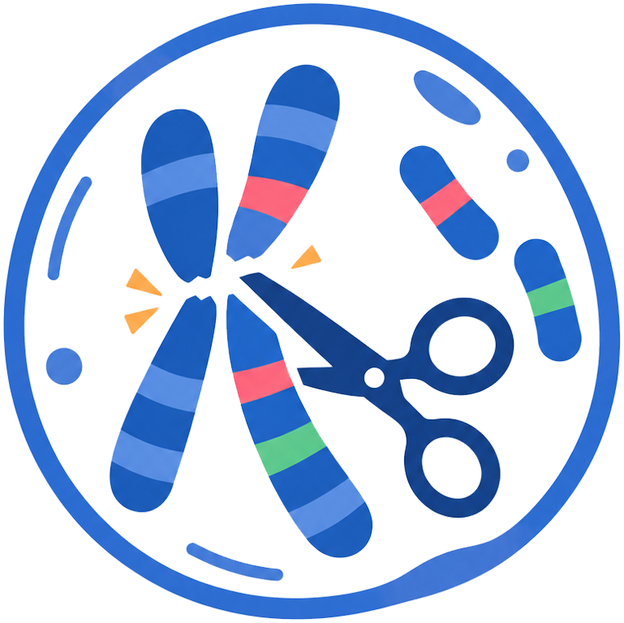

CRAVE v1.0
Chromosome Rearrangement And Visualization Explorer
1. Combined Genome Annotation (GFF)
2. Interspecies Synteny Block File
Merge Distance Threshold (bp):
▲
▼
3. Species Display Order & Base Colors
Please upload files first
4. Cut Points & Layout Control
No cut points yet
Import Layout (With Colors)
5. Data Export
Save Layout
Save Cut GFF
Reset View
🔪 Cut Mode: OFF
↩
↪
Link Color:
🖌️ Paint Mode
Brush:
PNG
SVG
PDF (Vector)
DPI
📥 Export Image
Tip: Upload files to start interactive analysis.